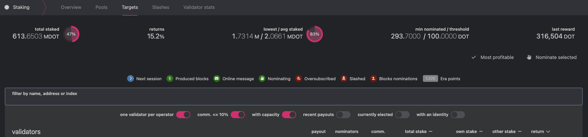
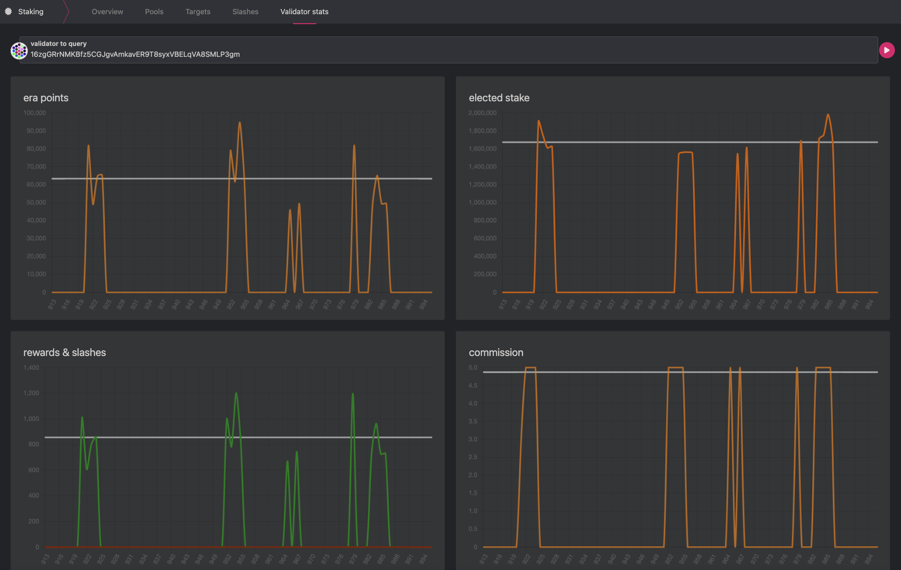
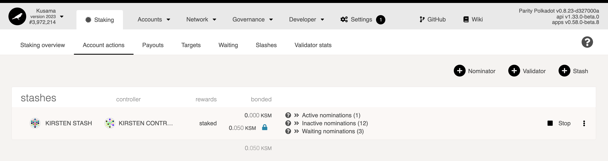
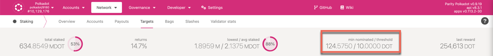

Nominator
New to Staking?
Start your staking journey or explore more information about staking on Polkadot's Home Page. You can learn how staking works by reading this dedicated page.
Discover the new Staking Dashboard that makes staking much easier and check this extensive article list to help you get started.
You can now stake natively with just 1 DOT and earn staking rewards.
Stake through Nomination Pools
The minimum amount required to become an active nominator (i.e. the minimum active bond) and earn rewards may change from era to era. If you have less tokens than the minimum active nomination and still want to participate in staking, you can join the nomination pools with a smaller amount of tokens. For additional information, see this blog post. Check the wiki doc on nomination pools for more information.
If you landed on this page, you decided to understand how you can be a good nominator. Note, this page is not for nomination pool members, although pool members might gain essential knowledge about how to choose nomination pools.
The information provided on this page is complementary to that on the Staking Page and Advanced Staking Page. Make sure you read those pages as well before nominating.
Who are Nominators?¶
Nominators are one type of staking participant. They appoint their stake to the validators, the second type of participant. By appointing their stake, they can elect the active set of validators and share in the rewards that are paid out.
While the validators are active participants in the network that engage in the block production and finality mechanisms, nominators take a slightly more passive role. Being a nominator does not require running a node of your own or worrying about online uptime. However, a good nominator performs due diligence on the validators that they elect. When looking for validators to nominate, a nominator should pay attention to their own reward percentage for nominating a specific validator - as well as the risk that they bear of being slashed if the validator gets slashed.
Why Nominate?¶
- You become a network participant, a group of diverse professionals and enthusiasts around the world aspiring to build and foster the next-gen Internet, Web3: a decentralized, privacy-focused, and trustless internet.
- You are an essential piece of the puzzle, keeping the network secure. The bonded balance can be used to vote in Polkadot OpenGov and shape the network's future direction.
- You will start to understand how Polkadot works at a technical-level. When you feel comfortable with your nomination skills and knowledge, you can open your nomination pool, help others secure the network and earn rewards, and build your reputation as a trusted nomination pool operator. If you like to be more involved, the next step is to become a validator.
- By getting staking rewards you keep up with or (likely) stay ahead of network inflation.
Nominators secure the relay chain by staking native tokens (DOT on Polkadot or KSM on Kusama) and nominating validators. You may have an account with DOT and want to earn fresh DOT. You could do so as a validator, which requires experience setting up a node and running and maintaining it 24/7.
On Polkadot, you can also earn DOT by nominating one or more validators. Doing so makes you a nominator for the validator(s) you chose. Pick your validators carefully - if they do not behave properly, they will get slashed, and you will lose some DOT. However, if they follow the network rules, you can share the staking rewards they generate.
While your tokens are staked for nominations, they are 'locked' (bonded). You can stop nominating at any time, but remember that the action is effective in the next era and does not automatically unbond your funds. Unbonding is a separate action, and it takes effect after the unbonding period. A staking lock will be visible on the Polkadot-JS UI during the unbonding period, and after it, the staking lock can be unlocked, and the bonded funds become free balance you can transfer.
Fast Unstaking
If you accidentally bonded your tokens or your bonded tokens never backed any active validator, you can now unbond them immediately.
If your bonded balance did not back any validators in the last 28 days on Polkadot (7 days on Kusama), you are eligible to perform fast unstaking. The staking dashboard will automatically check if you qualify. For more information, visit the "Fast Unstake" section in this support article.
Setting-up Accounts¶
Stash & Staking Proxy¶
Nominators are recommended to set up separate stash and staking proxy accounts. Explanation and the reasoning for generating distinct accounts for this purpose is elaborated in the keys section.
You can generate your stash and staking proxy account via any of the recommended methods, which are detailed on the account generation page. The first thing you need to do before becoming a nominator is to make sure you have a stash account where you can transfer funds you want to use for staking. For these accounts, it is recommended to use a "cold wallet" solution such as Ledger or Polkadot Vault.
After setting up the stash account, it is recommended to have a staking proxy. Although you can be a nominator with just a stash account, having a staking proxy is good practice for security reasons.
A staking proxy of the stash will be able to sign for all staking-related transactions as well. The stash will be fully isolated (except if the user decides to change the staking proxy of the stash or to attach different proxies to the stash).
Rewards Payout Account¶
As a nominator, you will be asked to choose an account where rewards will be paid. You can select one of the following options:
- back to staking: rewards are compounded to the bonded amount.
- to stash: rewards are sent to the stash account as a free balance.
- to another account: rewards are sent to a user-defined account (not stash).
Starting with runtime version v23 natively included in the client version 0.8.23, payouts can go to any custom address. If you'd like to redirect payments to an account that is neither the staking proxy nor the stash account, set one up. Note that setting an exchange address as the recipient of the staking rewards is extremely unsafe.
Info
Being a nominator is made simpler by using the Staking Dashboard that will guide you step by step through specifying rewards destination and bonded amount, and nominating validators (more on this below). Note that staking proxies are not currently supported on the dashboard.
Nominating with the Polkadot-JS UI¶
Targets Page¶
There are many factors to consider when deciding which of your nominations. One helpful tool to choose validators is the Staking Targets table in the Polkadot-JS UI. This allows sorting validators using various metrics. Below are the relevant metrics shown as an example, followed by a brief description of each.
| validator | payout | nominators | comm. | total stake | own stake | return |
|---|---|---|---|---|---|---|
| A | recently | 1 (active) 4 (all) |
3% | 1.6 MDOT | 8500 DOT | 17.8% |
- payout: How recently the validator made its last reward payout to nominators.
- nominators: This column consists of two number values. The active count (left number) is the number of nominators whose stake is baking the validator in the current era. In this case Validator A has one active nominator. The total or all count (right number) is the number of all nominators who nominated Validator A. This includes the active count and all the other nominators whose stake in the current era is baking other validators.
Every nominator can select up to a maximum number of validators, which contributes towards maximizing the probability of having the nominator’s stake applied to the validators active set. Nominating too few validators could result in the nominators not receiving their rewards when none of them make it to the active set or when those validators stop validating. The election algorithm attempts to maximize the overall network stake while minimizing the variance of the active stake across the validators. For additional information on the election process, check out the research behind nominated proof-of-stake.
- comm.: Total commission kept by the validator (100% means the validator will keep all rewards , and thus nominators will not receive them). A validator's commission is the percentage of the validator reward taken by the validator before the rewards are split among the nominators. As a nominator, you may think that choosing validators with the lowest commission is best. However, validators must be able to run at break-even to continue operations sustainably. Independent validators that rely on the commission to cover their server costs help to keep the network decentralized. Some validators, operated by central exchanges, etc., keep 100% of the commission to payout their staking service clients and therefore do not provide any rewards to external nominators. The commission is just one piece of the puzzle you should consider when picking nominating validators.
- total stake: The total amount of tokens staked by nominators and the validator (i.e. own stake, see below).
- own stake: The amount of tokens the validator has put up as a stake. A higher own stake can be considered as having more "skin in the game". This can imply increased trustworthiness. However, a validator not having a large amount of "own stake" is not automatically untrustworthy, as the validator could nominate from a different address.
- return: Average annual yield paid out to nominators (i.e. number of rewards divided by the number of bonded tokens). Note that nominating those with a higher yield may not guarantee similar future performance.

On the Targets page, you can use different filters to select validators with specific traits (where a trait is a combination of the metrics above). Available filters are:
- one validator per operator: Do not show groups of validators run by a single operator. It shows small operators only who will likely have a higher commission and higher self-stake. Nominating only small operators might not always guarantee staking rewards, but it helps to keep the network more resilient to attacks.
Validator vs Operator
A validator is the node, the physical equipment with installed software that allows to produce new blocks and earn rewards. An operator is the entity responsible for setting up, running and maintaining the node. An operator can have multiple validators under different sub-identities. For example, ZUG CAPITAL/07 is one of the numerous validators belonging to the operator Zug Capital.
- comm. < 20%: Do not show any validators with a commission of 20% or higher.
- recent payouts: Only show validators that have recently caused a payout to be issued. Note that anyone can cause a payout to occur; it does not have to be the operator of a validator.
- currently elected: Only show validators in the active set (i.e., they have been elected to produce blocks in the current era).
- with an identity: Only show validators that have set an identity. Note that this identity does not have to be verified by a registrar for the validator to appear in the list.
Single Operators with Multiple Validators
Recall that slashing is an additive function; the more validators equivocating in a given session, the harsher the penalties. Since validators that are controlled by a single operator are more at risk of a "synchronized" failure, nominating them implies a greater risk of having a large slash of your nominated funds. Generally, it is safer to nominate validators whose behavior is independent of others in many ways (different hardware, geographic location, owner, etc.).
Bags-list¶
Info
On Polkadot and Kusama, the instance of the pallet Bags-List is named as voterList.
Nominating accounts are placed in a semi-sorted list called bags-list. This sorting functionality is extremely important for the long-term improvements of the staking/election system. Bags-list allows an unlimited number nominators to set their intention to nominate, of which only a portion of it (currently 22500) is considered for electing set that eventually determines the active validators.
The nominator accounts in a bag are sorted based on their insertion order, not by their nomination
stake. The voterList.putInFrontOf extrinsic can be issued to move up in the bag, which might be
very useful for the accounts in the last bag eligible for receiving staking rewards. Balance changes
due to staking rewards or slashing do not automatically rebag the account. Whenever applicable,
Polkadot JS Apps UI prompts the nominator account to rebag or move up by calling the
voterList.rebag extrinsic.
For guidelines about how to rebag or move your account within a bag, see the followings:
- The "Bags List" Section on this Support Page.
- The Bags List Section in Advanced Staking Concepts.
- The dedicated technical explainer video.
Validator Stats¶
Nominators can query validator histories to see statistics such as era points, elected stake, rewards and slashes, and commission. It is good practice to do comprehensive research on validator candidates. This could include (but should not be limited to) checking the validators' identity (if they have set one) and going over the validators' websites to see who they are, what kind of infrastructure setup they are using, reputation, the vision behind the validator, and more.
Any problematic behavior must be taken seriously. An example of problematic behavior will be if a validator is regularly offline. In this case, nominators will get fewer rewards.

Nominating with the Staking Dashboard¶
If you are a beginner, please watch the video below for detailed instructions.

The Polkadot Staking Dashboard allows to choose pre-selected lists of validators based on user preference, or to manually select validators similarly as in the Polkadot-JS UI.
Pre-selected choices are:
- Optimal Selection: Selects a mix of majority active and inactive validators.
- Active Low Commission: Gets a set of active validators with low commission.
- From Favorites: Gets a set of your favorite validators.
Staking Election Stages¶
The staking election system has three stages for both validators and nominators, namely "intention", "electable/electing", and "active".
- intention to nominate: an account that has stated the intention to nominate; also called simply a "nominator".
- electing nominator: a nominator who is selected to be a part of the input to the NPoS election algorithm. This selection is based on stake and is made using the bags-list.
- active nominator: a nominator who came out of the NPoS election algorithm backing an active validator. When slashing occurs, all the active nominators backing the validator get slashed.

The Election Solution Set¶
Determining which validators are in the active set and which nominators are nominating them creates a very large graph mapping nominators to their respective validators. This "solution set" is computed off-chain and submitted to the chain, which means it must fit in a single block. If there are a large number of nominators, this means that some nominators must be eliminated. Currently, nominators are sorted by the amount of DOT staked, and those with more DOT are prioritized. This means that you may not receive rewards if you are staking with a small amount of DOT. This minimal amount is dynamic based on the number of validators, nominators, amount nominated, and other factors.
Receiving Rewards¶
As long as you have nominated more than one validator candidate, at least one of them got elected, and you are nominating with enough stake to get into the solution set, your bonded stake will be fully distributed to one or more validators. That being said, you may not receive rewards if you nominated very few validator candidates and no one got elected, or your stake is small, and you are not part of the top 22,500 nominators, or the validator you are nominating has 100% commission. It is generally wise to choose as many trustworthy validators as you can to reduce the risk of none of your nominated validators being elected.
Not receiving Staking Rewards?
To explore the possible reasons for not receiving staking rewards, check out the followings: - The Staking FAQ on the Support Pages. - The "Why am I not receiving staking rewards?" Reddit article. - The "Why am I not receiving staking rewards?" section on the Staking Page.
Rewards are lazy - somebody must trigger a payout for a validator for rewards to go to all of the validator's nominators. Any account can do this, although validator operators often do this as a service to their nominators. See the page on Simple Payouts for more information and instructions for claiming rewards.
Explainer videos on Nominating
These concepts have been further explained in the following videos: - Why Nominate on Polkadot & Kusama - What to Consider when Nominating Validators on Polkadot and Kusama - Nominating/Staking on Polkadot and Kusama
Good Nominator Practices¶
Required Minimum Stake¶
Due to the way the Phragmen algorithm generates the solution set and due to the fact that the solution set must fit in a single block, a minimum number of DOT will be required to nominate with to receive staking rewards can change between the eras.
-
min-intention-threshold: minimum stake to declare the intention to nominate. This parameter can be updated via on-chain governance, and the most recent and up-to-date version can be found on chain state (select state query > staking > minimumNominatorBond)
-
min-electing: minimum stake among the electing nominators. Since this is almost always the same as “min-active”, it might not be reported.
-
min-active: minimum stake among the active nominators. If your stake falls below this dynamic threshold in a given era, you will not receive staking rewards for that era.
Thus, for nominator counters, we have:
- count of nominator intentions and max possible nominator intentions
- count of electing nominators, and maximum possible electing nominators (22500 on Polkadot and 12500 on Kusama)
- count of active nominators and maximum possible active nominators (22500 on Polkadot and 12500 on Kusama)
Active vs. Inactive Nomination¶
When you go to the Account actions under staking page, you should see your bonded accounts and nomination status. If not, you can follow this guide to configure it first. Your nominations will be effective in the next era; eras are roughly 24 hours on Polkadot (6 hours on Kusama).

Suppose you have nominated five validator candidates, and three out of five were elected to the active validator set; then you should see two of your nominations as "waiting", and most likely one as "active" and the rest as "inactive". Active or inactive nomination means your nominated validators have been elected to be in the validator set, whereas waiting means they did not get elected. Generally, you will only have a single validator have an active nomination, which means that you are directly supporting it with your stake this era and thus potentially receiving staking rewards. Inactive nominators were validators elected for this era but which you are not actively supporting. Every era, a new election will take place, and you may be assigned a different active nomination from the validators you selected.
If you are committing a very large stake, you may have more than one active nomination. However, the election algorithm attempts to minimize this situation, and it should not occur often, so you should almost always see only a single active nomination per era. See the section on Phragmén optimization for more details.
Minimum Active Nomination to Receive Staking Rewards¶
Minimum DOT required to earn staking rewards
The minimum number of tokens required to submit intent to nominate differs from the minimum active nomination required to earn staking rewards.

Guides¶
- Be a Nominator (Polkadot) - Guide on nominating on the Kusama canary network.
- Stop Being a Nominator (all networks) - Guide on stopping nominations and withdrawing tokens.